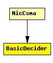

File: NetworkInterfaces/MFCore/BasicDecider.ned
C++ definition: click here
Module to decide whether a frame is received correctly or is lost due to bit errors, interference...
The decider module only handles messages from lower layers. All messages from upper layers are directly passed to the snrEval layer and cannot be processed in the decider module
This is the basic decider module which does not really decide anything. It only provides the basic functionality which all decider modules should have, namely message de- & encapsulation (For further information about the functionality of the physical layer modules and the formats used for communication in between them have a look at the manual
Every own decider module class should be derived from this class and only the handle*Msg functions may be redefined for your own needs. The other functions should usually NOT be changed.
All decider modules should assume bits as a unit for the length fields.
This component has been taken over from Mobility Framework 1.0a5.
Author: Marc Löbbers, Daniel Willkomm
The following diagram shows usage relationships between modules, networks and channels. Unresolved module (and channel) types are missing from the diagram. Click here to see the full picture.
If a module type shows up more than once, that means it has been defined in more than one NED file.
| NicCsma | The CsmaNic contains a csma-like MAC layer. The SnrEval module is used as the mac needs a RadioState to be published. However as still the BasicDecider is used all messages will be delivered to the MAC and no packets get lost |
| Name | Type | Description |
|---|---|---|
| coreDebug | numeric const | debug switch for the core framework |
| Name | Direction | Description |
|---|---|---|
| uppergateOut | output | to MAC layer |
| lowergateIn | input | from snrEval sub-module |
simple BasicDecider parameters: coreDebug : numeric const; // debug switch for the core framework gates: out: uppergateOut; // to MAC layer in: lowergateIn; // from snrEval sub-module endsimple